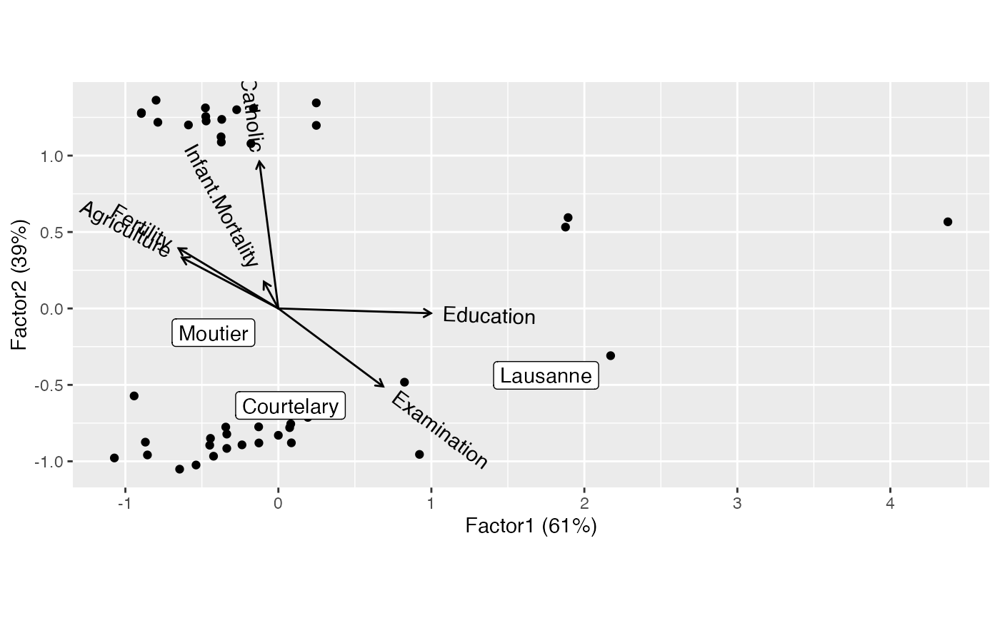

stat_rows.RdThese stats merely tell ggplot2::ggplot() which factor of an
ordination to pull data from for a plot layer. They are invoked internally
by the various geom_*_*() layers.
stat_rows(
mapping = NULL,
data = data,
geom = "point",
position = "identity",
subset = NULL,
elements = "all",
...,
show.legend = NA,
inherit.aes = TRUE
)
stat_cols(
mapping = NULL,
data = data,
geom = "axis",
position = "identity",
subset = NULL,
elements = "all",
...,
show.legend = NA,
inherit.aes = TRUE
)Set of aesthetic mappings created by aes() or
aes_(). If specified and inherit.aes = TRUE (the
default), it is combined with the default mapping at the top level of the
plot. You must supply mapping if there is no plot mapping.
The data to be displayed in this layer. There are three options:
If NULL, the default, the data is inherited from the plot
data as specified in the call to ggplot().
A data.frame, or other object, will override the plot
data. All objects will be fortified to produce a data frame. See
fortify() for which variables will be created.
A function will be called with a single argument,
the plot data. The return value must be a data.frame, and
will be used as the layer data. A function can be created
from a formula (e.g. ~ head(.x, 10)).
The geometric object to use display the data
Position adjustment, either as a string, or the result of a call to a position adjustment function.
An integer, logical, or character vector indicating a subset of
rows or columns for which to render graphical elements. NB: Internally, the
subset will be taken from the rows of the fortified
'tbl_ord' comprising rows from only one of the matrix factors. It is still
possible to pass a formula to the data parameter, but it will act on the
fortified data before it has been restricted to one matrix factor.
Character vector; which elements of each factor for which to
render graphical elements. One of "all" (the default), "active", or any
supplementary element type defined by the specific class methods (e.g.
"score" for 'factanal', 'lda_ord', and 'cancord_ord' and "intraset" and
"interset" for 'cancor_ord').
Additional arguments passed to ggplot2::layer().
logical. Should this layer be included in the legends?
NA, the default, includes if any aesthetics are mapped.
FALSE never includes, and TRUE always includes.
It can also be a named logical vector to finely select the aesthetics to
display.
If FALSE, overrides the default aesthetics,
rather than combining with them. This is most useful for helper functions
that define both data and aesthetics and shouldn't inherit behaviour from
the default plot specification, e.g. borders().
ggbiplot() uses ggplot2::fortify() internally to produce a single data
frame with a .matrix column distinguishing the subjects ("rows") and
variables ("cols"). The stat layers stat_rows() and stat_cols() simply
filter the data frame to one of these two.
The geom layers geom_rows_*() and geom_cols_*() call the corresponding
stat in order to render plot elements for the corresponding factor matrix.
geom_dims_*() selects a default matrix based on common practice, e.g.
points for rows and arrows for columns.
Other biplot layers:
biplot-geoms,
biplot-stats
# FA of Swiss social data
swiss_fa <-
ordinate(swiss, model = factanal, factors = 2L, scores = "regression")
# active and supplementary elements
get_rows(swiss_fa, elements = "active")
#> Factor1 Factor2
#> Fertility -0.65238512 0.39335226
#> Agriculture -0.63054439 0.33275063
#> Examination 0.68498141 -0.51036433
#> Education 0.99700850 -0.03128268
#> Catholic -0.12417831 0.96118093
#> Infant.Mortality -0.09466294 0.17483734
head(get_rows(swiss_fa, elements = "score"))
#> Factor1 Factor2
#> Courtelary 0.07912746 -0.6344915
#> Delemont -0.17926953 1.0783941
#> Franches-Mnt -0.58784929 1.2004233
#> Moutier -0.42433417 -0.1583409
#> Neuveville 0.38211185 -0.6682790
#> Porrentruy -0.37286722 1.0884740
# biplot using element filters and selection
# (note that filter precedes selection)
ggbiplot(swiss_fa) +
geom_rows_point(elements = "score") +
geom_rows_text(aes(label = .name), elements = "score", subset = c(1, 4, 18)) +
scale_alpha_manual(values = c(0, 1), guide = "none") +
geom_cols_vector() +
geom_cols_text_radiate(aes(label = .name))
#> `subset` will be applied after data are restricted to score elements.
